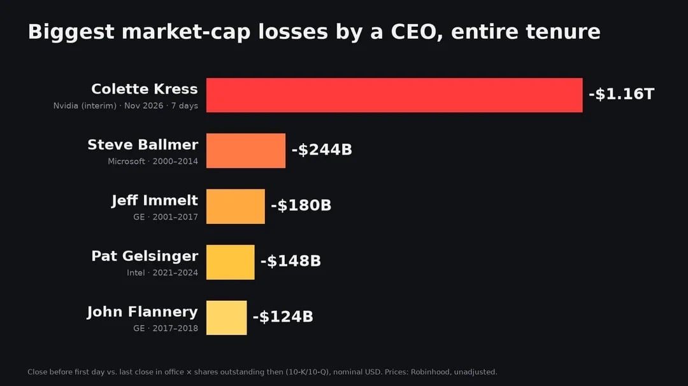

은 바로 임시 CEO 맡았던 콜레트 크레스
스티브 발머를 뛰어넘는 손실을 기록한 CEO가 되어버림 ㅋㅋ

은 바로 임시 CEO 맡았던 콜레트 크레스
스티브 발머를 뛰어넘는 손실을 기록한 CEO가 되어버림 ㅋㅋ
그렇긴 한데 일단 기록상 저렇게 박제되어버림 ㅋㅋ
지좆대로 재무재무
일 개못하네 진짜
ㅋㅋㅋㅋㅋㅋㅋ
야 다시 떠
주주들이 싫어하는 CEOㅋㅋ
저년이 신용거래했던거 부정하지않았음? 맞는거면 지업적맞잖아
솔직히 순환규모 축소하는 게 맞긴 함. 이전부터 지적은 계속 나와왔음
그걸 축소하고 정상화시킬려고하니 다붕괴하는게 문제이지않음? ㅋㅋㅋ
진짜 이정도로 키운건 존슨황의 영업력인데
자리에 물러나자마자 30프로 이상 다시 폭등하는거면
오너리스크가 얼마나 큰거임 ㄷㄷ

7일만에 회사를 작살낸(타의로) CEO
쟤 때문에 젠슨황이 만든 순환 구조가 위험 한거 드러나면서 미래가 걱정이긴 함
그치 젠슨황이 천년만년 살수있는건 아니니까
전세계가 억까 ㅋㅋㅋㅋㅋ
저 사태로 쟤를 평가하진 않겠지 뭐ㅋㅋㅋ